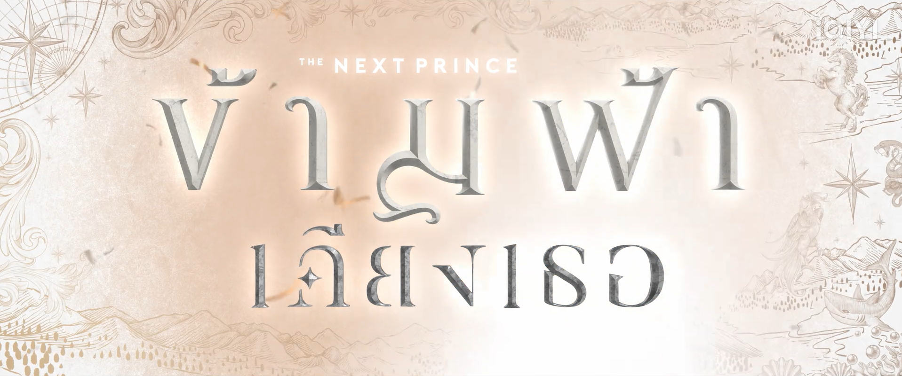

Genre: BL, Romance, Drama, Action
Country: Thailand
Language: Thai
Seasons: 1
Episodes: 14 (Still Ongoing)
Release Date: May 03,2025
Where to Watch: Youtube: Mandee Channel (EP1), iQIYI
Synopsis
The Next Prince follows Khanin, a seemingly ordinary boy in London who discovers he is the crown prince of the kingdom of Emmaly. Reluctant to accept his royal destiny, Khanin is brought back by his loyal royal guard Charan to compete in a Royal Fencing Competition that will determine the next king. As they face political intrigue, assassination attempts, and growing feelings for each other, Khanin must embrace his heritage and uncover the truth behind his adoptive father's death to claim his throne.
Cast
-
Zee Pruk Panich as Charan Phithakthewa
-
NuNew Chawarin Perdpiriyawong as Khanin Assavadevathin
-
Jimmy Karn Kritsanaphan as Ramil Phuchongphisu
-
Ohm Thanakrit Chiamchunya as Paytai Ronawi
-
Net Siraphop Manithikhun as Calvin
-
JJ Radchapon Phornpinit as Jay
Why does Ivjiro recommend this series?
Disclaimer: this section reviewed by Ivjiro which may consist of spoilers and opinions about the series.
The Next Prince is a unique and compelling series that, while fictional, thoughtfully addresses real-life issues and situations. Set in the fictional kingdom of Emmaly—a land divided into four clans, each facing its own challenges—the story explores a wide range of themes including political, environmental, gender-related, physical, and psychological issues. One of the most striking aspects of the series is its high production quality. With skillful acting, beautiful cinematography, and meticulous attention to detail, the show immediately captures viewers’ attention. Despite its distinctive royal setting, The Next Prince is a well-produced series that stands apart from typical romance dramas due to its originality and depth.
The narrative centers on Charan (played by Zee), a reserved royal guard, and Khanin (played by NuNew), the reluctant crown prince. Beyond their slow-burning romance, the two uncover mysteries and seek the truth behind various conflicts—such as the reasons behind the attacks on Khanin, even while he is in London. Together, they confront pressing political and environmental issues affecting their kingdom. Their relationship is marked by contrast: Charan is emotionally reserved and keeps his feelings hidden, while Khanin is more open and patient, gradually learning to understand Charan. Their chemistry is a highlight of the series, adding to its unique charm and emotional depth.
The story also features other couples, each facing their own struggles. Ramil (played by Jimmy) and Paytai (played by Ohm) have a relationship shaped by physical and psychological challenges. Ramil suffers emotional manipulation from his father, while Paytai endures physical abuse linked to Ramil’s family. Another couple, Calvin (played by Net) and Jay (played by JJ), bring different perspectives. Calvin is an exchange student and undercover prince from Bhujar, attending Morpheus University of Arts, where he meets Jay, a passionate commoner and activist who uses protests to raise awareness for the suffering in their city. Their storyline highlights environmental and political issues that also engage the main characters. The protests become a catalyst for Khanin’s awakening and desire to enact change, contrasting sharply with his grandfather, the king, who is primarily concerned with maintaining power and the throne.
By weaving these diverse issues into its narrative, The Next Prince encourages viewers to be more open-minded and empathetic toward real-world problems. It offers more than just a romance—it provides insight into the complexities of governance, social justice, and personal identity, helping audiences understand how a country’s political and social dynamics unfold.
In summary, The Next Prince is a richly layered series that balances romance with meaningful social commentary, making it both an engaging and thought-provoking watch.